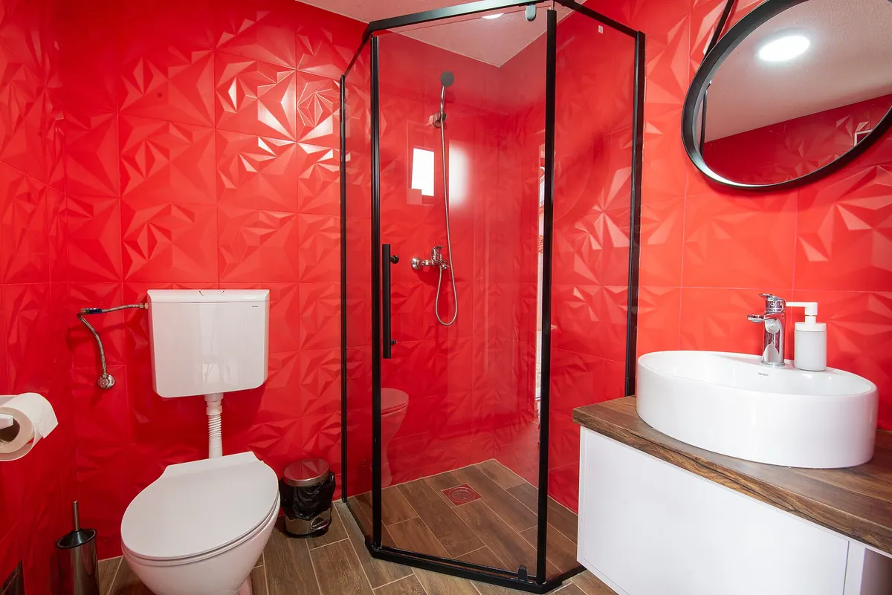
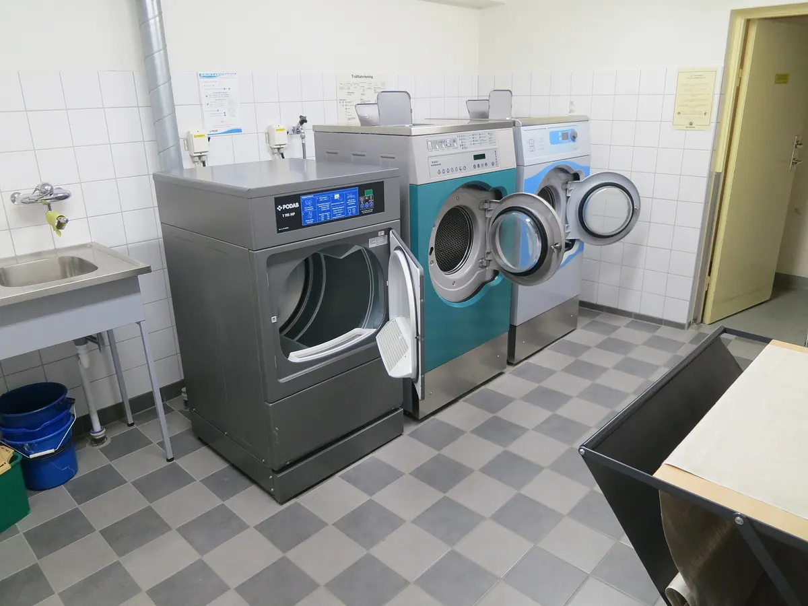

Tjänst · Storstädning
Storstädning i Stockholm — 599 kr per timme
En lägenhet på 75 m² tar 5 timmar och kostar 2 995 kr före RUT. Med RUT-avdrag betalar du 1 497,50 kr. Timpriset är 599 kr, och du har avdraget klart i samma faktura i stället för att vänta på pengar från Skatteverket.
Offert inom 2 timmar på vardagar. Vi arbetar i Stockholms stad, Solna, Sundbyberg, Nacka, Täby, Danderyd, Bromma och Farsta. Skicka yta och adress till vberg024@gmail.com om du vill ha priset på mejl.
Skillnaden mot hemstäd
Hemstäd håller ytan ren. Storstädning går in i skåp, fogar och kanter som annars aldrig blir rengjorda. Nedan ser du vad skillnaden betyder i tid och pengar för en bostad på 75 m².
| Moment | Hemstäd | Storstädning |
|---|---|---|
| Kök | Utvändigt: bänkar, spis, diskho, golv | Invändigt i skåp, ugn och kyl |
| Badrum | Ytor: tvättställ, WC, golv, duschvägg | Kalkborttagning på kakel, fogar och armatur |
| Fönster | Inte med | Invändigt i alla rum, inklusive karm |
| Lister och dörrar | Avtorkning av dörrhandtag och synliga ytor | Urtorkning av alla lister, dörrar och karmar |
| Tid för 75 m² | 3,5 h | 5 h |
| Pris | 1 921,50 kr före RUT | 2 995 kr före RUT |
Dra i tabellen i sidled för att se alla kolumner. På telefon visas varje rad som ett kort med etikett.
Hemstäd kostar 549 kr per timme och storstädning 599 kr per timme. RUT-avdraget är 50 % på arbetskostnaden och gäller privatpersoner, inte företag.
Det här ingår i en storstädning
Checklistan nedan ligger till grund för uppdragsprotokollet. Vi bockar av varje punkt och fotograferar de utrymmen som tar mest tid: kök, badrum och fönster.
Rum för rum
- Ugn in- och utvändigt, inklusive plåt och galler
- Kylskåp och frys urtagna och rengjorda
- Köksfläkt och filter
- Köksskåp invändigt
- Kakel och fogar avkalkade
- Duschväggar utan kalk
- WC invändigt
- Fönster invändigt inklusive karm
- Alla lister
- Dörrar och karmar
- Dörrhandtag och kontakter
- Garderober invändigt
- Balkong sopad
- Golv i alla rum
- Protokoll med foton
Vill du lägga till ugn eller kylskåp som separat moment på en hemstädning kostar ugn 350 kr och kylskåp invändigt 250 kr.
Pris per yta
Tabellen visar vad en storstädning kostar för fyra vanliga ytor. Timpriset är 599 kr och RUT-avdraget är 50 %, så du betalar halva summan direkt på fakturan.
| Yta | Tid | Pris före RUT | Efter RUT |
|---|---|---|---|
| 35 m² | 2,5 h | 1 497,50 kr | 748,75 kr |
| 55 m² | 3,5 h | 2 096,50 kr | 1 048,25 kr |
| 75 m² | 5 h | 2 995 kr | 1 497,50 kr |
| 95 m² | 6,5 h | 3 893,50 kr | 1 946,75 kr |
Dra i tabellen i sidled för att se alla kolumner. På telefon visas varje rad som ett kort med etikett.
Ligger ytan mellan två rader räknar vi på minuter. Är bostaden 67 m² debiteras 4,5 timmar, alltså 2 695,50 kr före RUT och 1 347,75 kr efter.
Protokollet du får efteråt
Efter varje storstädning signerar du ett digitalt protokoll med checklista, tidsstämplar och foton. Det gör att du kan visa uppdragsgivare, mäklare eller besiktningsman exakt vad som är gjort.
Uppdragsprotokoll 2026-0418

När en storstädning behövs
Storstädning är inte något du bokar varje månad. Fyra situationer står för nästan alla våra uppdrag.
Inför försäljning eller besiktning
En mäklare som kan visa rena skåp, fogar och fönsterkarmar får färre frågor på visningen, och besiktningsmannen hittar inget att anmärka på. Vi lägger protokollet i bostaden så att det ligger framme.
Efter renovering eller hantverkare
Byggdamm sätter sig i lister, i garderober och ovanpå dörrkarmar. Vi tar bort dammet en gång ordentligt i stället för att skjuta det framför moppen i veckor.
När hemstäd inte räcker
Om ugnen, fläktfiltret eller fönstren inte har varit inne i städningen på ett år är skillnaden mellan 3,5 och 5 timmar för en 75 m² stor nog att märkas.
En gång per år som genomgång
Många kunder bokar samma vecka varje år, oftast i april eller i oktober. Då går vi igenom hela bostaden och du får ett nytt protokoll att jämföra med.

Tid vi behöver
Räkna med minst 2 timmar, även i en liten lägenhet. Timmarna går åt till kanter, fogar och insidan av skåp, inte till golvytan.
Så räknar vi fram tiden
Vi utgår från hemstädningen för samma yta och lägger på cirka 4 minuter per kvadratmeter. En bostad på 75 m² ligger på 3,5 timmar i hemstäd och 5 timmar i storstäd. En bostad på 95 m² ligger på 4,5 timmar i hemstäd och 6,5 timmar i storstäd. Har bostaden stått tom eller varit utsatt för byggdamm lägger vi på 1 timme, eftersom dammet hinner sätta sig i lister, karmar och garderober.
Balkong och förråd tar 15–20 minuter var och bokas som tillägg: balkong 200 kr och förråd 150 kr. Fönsterputs utvändigt görs separat och kostar 79 kr per båge, med minsta debitering 1 200 kr.
Tiden är en uppskattning. Vi bekräftar antalet timmar i offerten och ändrar oss inte under arbetet om ytan stämmer med uppgifterna.
Frågor och svar
Kan jag använda RUT för storstädning?
Ja, om du äger eller bor i bostaden som privatperson. RUT-avdraget är 50 % av arbetskostnaden, upp till 50 000 kr per person och år. Vi drar av halva beloppet direkt på fakturan och redovisar resten till Skatteverket. Företag och bostadsrättsföreningar får ingen rabatt på storstädning; för dem ligger priset på 599 kr per timme plus moms.
Gör ni storstädning i tom bostad?
Ja, och det går snabbare än i en möblerad bostad eftersom vi kommer åt golv och lister runt om. Räkna ändå med minst 2,5 timmar för 35 m². Lämnar du nyckeln till oss skriver vi in det i protokollet tillsammans med tidsstämplarna för in- och utpassering.
Kan jag boka storstädning inför en flytt?
Det vanligaste är att storstädning bokas i stället för flyttstäd när bostaden ska säljas utan besiktningskrav, eller när köparen redan har tagit över ansvaret för att flyttstäda. Ska bostaden besiktigas väljer de flesta flyttstäd: 55 m² tar 7,5 timmar och kostar 4 867,50 kr före RUT, alltså 2 433,75 kr efter. Är du osäker på vilken tjänst som gäller, ring +46 70 494 90 87 eller skicka uppgifterna via bokningsformuläret så säger vi vilken som passar.
75 m² storstädas för 2 995 kr före RUT och 1 497,50 kr efter. Tiden vi behöver är 5 timmar, och du får protokollet med foton samma dag.
Boka storstädning